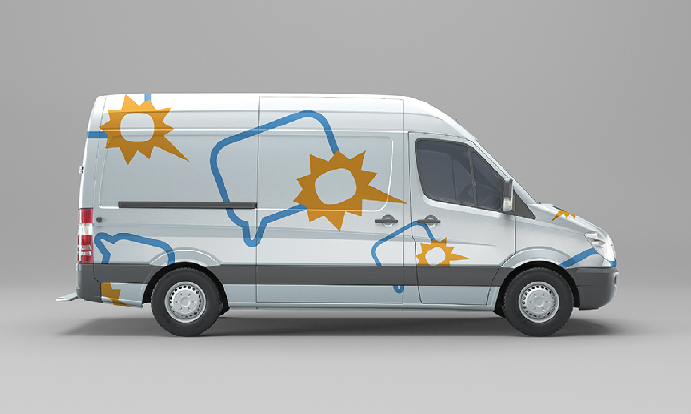

Pass'âge
IDENTITE VISUELLE/ icône - logotype - motif
Création d'une identité de marque pour une crêche intergénérationnel. Cet espace qui prône la diversité des âges a pour u-but de communiquer ses valeurs de partage et de confrontation des générations.
De ce fait, l a été question de traduire graphiquement ces valeurs en utilisant des phylactères qui s'imbriquent en représentant à la fois des personnes âgées et des enfants. Cette représentation n'est alors pas littéraire, puisque c'est un lieu ou l'échange et la communication est importante, ces phylactères se superposent, se contrastent mais surtout s'harmonisent.
